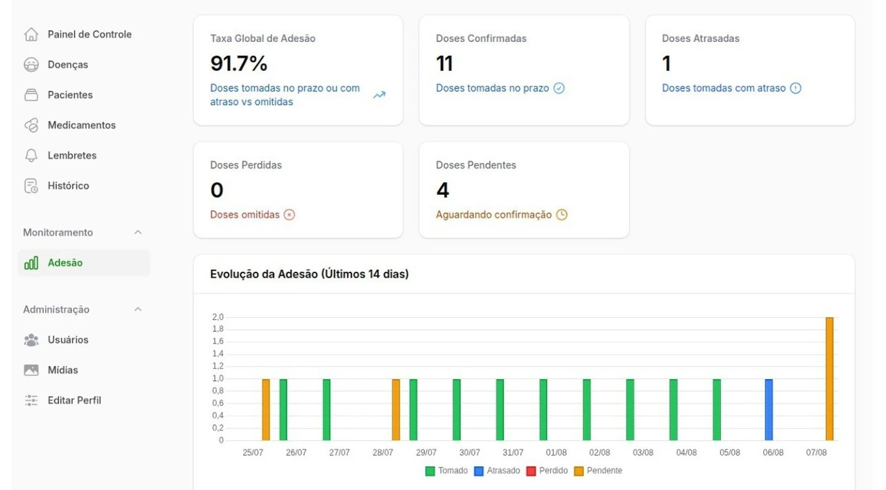

Projeto principal · no ar
LembreMED
Sistema web que ajuda idosos e cuidadores a organizar os remédios e a lembrar de cada dose.
- Problema
- Quem toma vários remédios por dia precisa lembrar de cada dose no horário certo, e quem cuida precisa saber se ela foi tomada.
- Solução
- O cuidador cadastra remédios e horários e acompanha as doses. O idoso usa uma tela simples e acessível. São três níveis de acesso: idoso, cuidador e administrador.
- Meu papel
- Desenvolvo em dupla com João Gabryel, com orientação do Prof. Iury Gomes de Oliveira (IFTO / LabSIS). Trabalho nos perfis de acesso e no painel que mostra a situação de cada dose. Apresentei o pôster que ficou em 1º lugar na 17ª JICE.
- Resultado
-
7 prêmios, 4 deles em 1º lugar
- 1º lugar Ciências Biomédicas e da Saúde, Viva Ciência 2026 (IFTO)
- 1º lugar Prêmio Ciência que Transforma, do Rotary Club de Araguaína
- 1º lugar Ciências da Saúde, 17ª JICE (IFTO)
- 1º lugar Ciências Biológicas e da Saúde, Viva Ciência 2025
- 3º lugar, Ideathon da Campus Party Goiás
- Prêmio Ciência Empreendedora, do Sebrae
- Prêmio UNITPAC Afya
